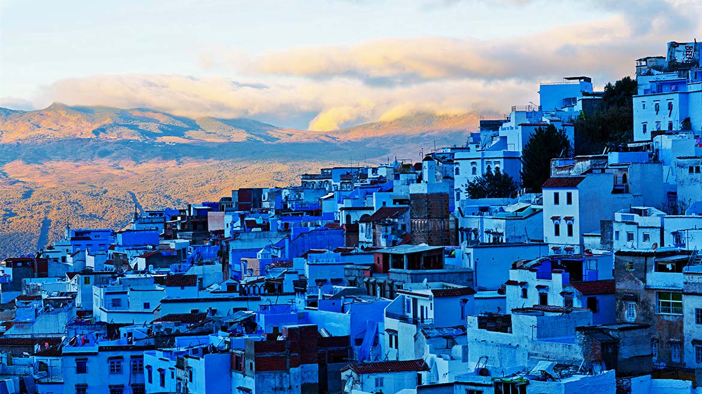
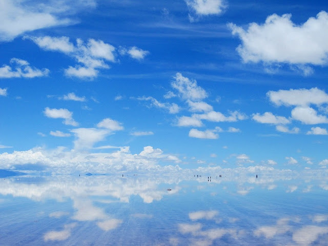
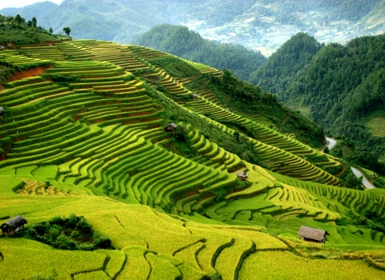
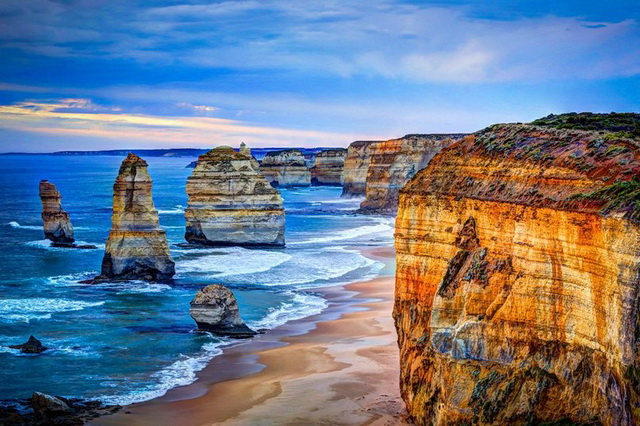
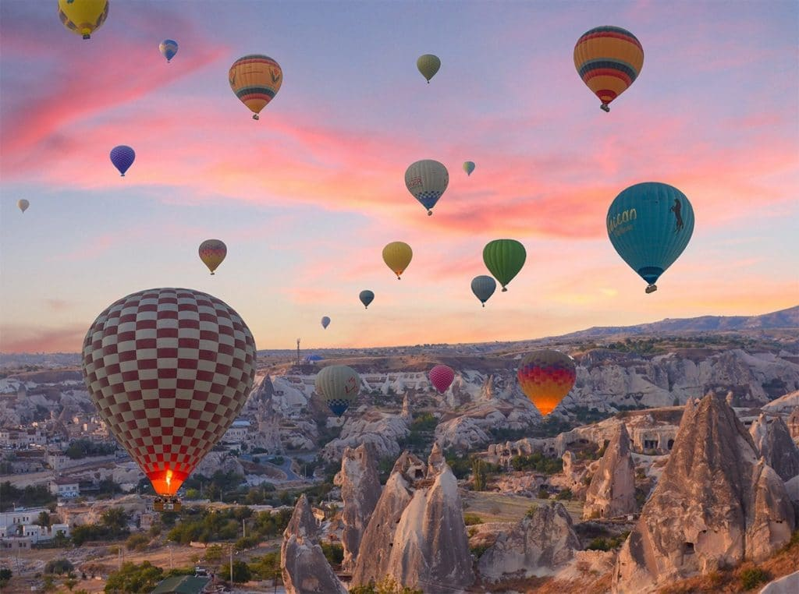
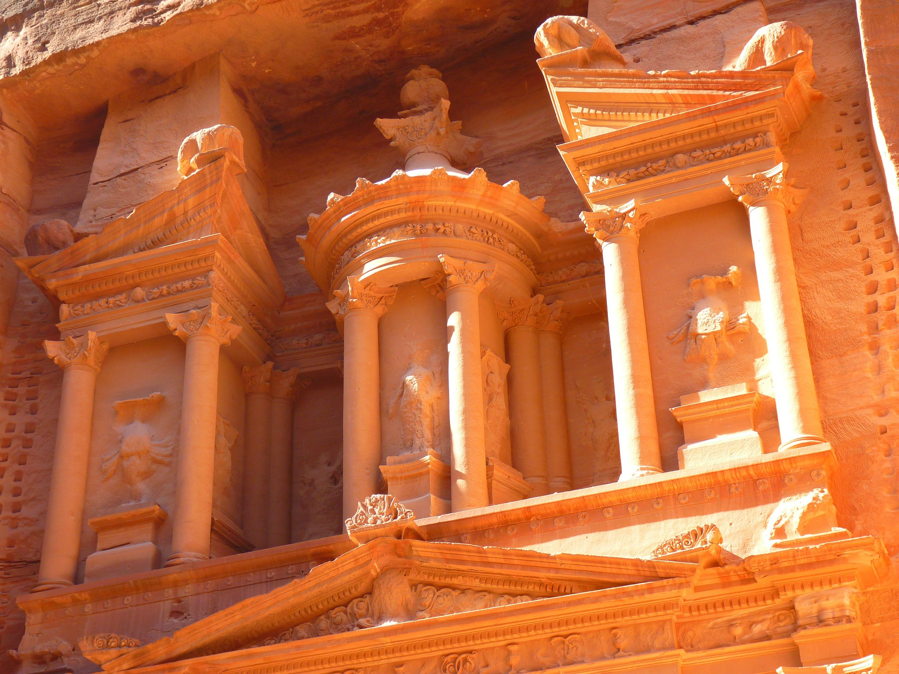

Блакитне місто Шефшауен, Марокко
Блакитне марокканське місто Шефшауен, хоча й не має виходу до води, нагадує безкрає синє море, що тихо плещеться біля підніжжя гірського хребта Риф.
Місто було засновано у далекому 1471 році, коли на місті Шефшауена була зведена мавританська фортеця для вигнанців з Іспанії. Протягом століть місто гостинно приймало християн та іудей, які мирно співіснували з корінними берберами.
Стоячи посеред цього блакитного оазису, складається враження, що місцеві жителі мають унікальне почуття краси. Однак причина фарбування усіх будинків у сині кольори має релігійне пояснення. Згідно з іудейським вченням, синій колір має нагадувати людям про Божу велич, і місцеві ревно дотримуються цього повір’я. Також ходять чутки, що синій колір відлякує комарів. Інтенсивність блакитних будинків підкреслюється численними крамничками, у вітринах яких виставлені яскраві ковдри ручної роботи, килими та абажури. А у лабіринтах брукованих вулиць легко можна провести цілий день.
Соляна рівнина Салар-де-Уюні, Болівія
Безкрая солона пустеля, яка під покровом води перетворюється на найбільше природнє дзеркало у світі? Є таке! Займаючи територію, що приблизно дорівнює площі Багамських островів, солончак Салар-де-Уюні утворився внаслідок висихання доісторичного озера Мінчін, що залишило після себе бездоганно рівну соляну поверхню. Додаткові поклади солі просочилися з сусідніх гір, які не мали виходу до моря.
Своєрідний привіт з минулого, Салар-де-Уюні залишає незабутнє враження: лише уявіть безкраю рівнину сухої блискучої солі, що нагадує поверхню місяця, пронизану лише кількома островками, які підкреслюють сюрреалістичну красу цих місць. Під час сезону дощів (з грудня по квітень) солончак покриває тонкий шар води, що перетворює соляну пустелю на широке озеро, дзеркальна гладь якого передає настільки ідеальне відображення неба, що неможливо розрізнити грань між небом і землею.
Усі відтінки зеленого чекають на вас на рисових полях Каскад рисових плантацій, густі бамбукові ліси та гори, занурені у хмари, – усе зійшлося в Сапа, зробивши його одним з найбільших казкових місць В’єтнаму.
В минулому ця територія складалась з безкраїх крутих схилів з багатими родючими ґрунтами. З часом місцеві жителі почали створювати тераси на схилах, щоб вирощувати рис. Це звична практика у гірських районах, що зменшує ерозію та збільшує ефективність при вирощуванні зернових, які потребують поливу. Ще один позитивний результат має більше естетичний характер: каскадні поля створюють такі неймовірні краєвиди, що не одразу усвідомлюєш, що дивишся на злаки.
Кольори змінюються залежно від пори року. Протягом червня-липня рисові плантації квітнуть, тішачи око соковитими зеленими відтінками, а у вересні-жовтні вдягаються у золоті шати, створюючи казковий контраст з зеленими гірськими схилами.
Дванадцять апостолів, Австралія
Подавшись з Мельбурна на захід мальовничою Великою океанською дорогою, через чотири години їзди ви прибудете до одного з найбільш відомих місць Австралії – Дванадцяти апостолів, що являють собою величезні кам’яні брили, які здіймаються над водами Південного океану.
Апостоли виникли завдяки тривалому та постійному процесу ерозії вапнякових скель: бурхливий Південний океан і могутні вітри роз’їдали м’який вапняк, створюючи у скелях печери. З часом печери ставали арками, які, руйнуючись, у свою чергу утворили окремі кам’яні стовпи висотою до 45 м. Назва може дещо ввести в оману: тут ніколи не було 12 кам’яних стовпів, а лише дев’ять (при цьому достовірне пояснення назви відсутнє, окрім адаптування місцевої назви в офіційну).
Станом на 2019 рік залишилось лише вісім брил – ерозія невблаганно продовжує свою справу. Кращий час для відвідування – під час сходу чи заходу сонця, коли апостоли змінюють своє забарвлення з тьмяного на яскравий колір піску.
Ми впевненні, що ви бачили фотографії, але жодна світлина не здатна передати всю красу Каппадокії. Лише за годину їзди від головного міста Анатолії – Кайсері, це стародавнє царство існувало у певній формі протягом більш ніж 3500 років, а сьогодні його унікальні печерні помешкання та фантастичні утворення вулканічних порід (також відомі під назвою “каміни фей”) привертають увагу близько одного мільйона туристів щороку.
Найкращий спосіб насолодитися місцевими краєвидами – піднятися в небо. З ціною близько €200 екскурсія на повітряній кулі може здатися дорогим задоволенням. Однак зваживши, що політ триває цілком пристойні 95 хвилин, протягом яких на вас очікують незабутні пейзажі, занесені до Світової спадщини ЮНЕСКО, ви зрозумієте, що це невелика ціна за можливість познайомитися з цим унікальним дивом природи.
На Середньому Сході Петра відома як рожева перлина Йорданії, однак для більшості західної аудиторії – це культова споруда, відома, головним чином, з фільмів «Індіана Джонс і останній хрестовий похід» та «Трансформери 2». Навіть якщо туристів притягують до цього історичного спадку ЮНЕСКО фільми, справжню цінність стародавнього міста важко переоцінити.
Збудований близько 300 до н.е. набатеями із неймовірно складними деталями, це археологічне місце має власні гробниці, стайні і навіть амфітеатр, вирізані у піщанику навколишніх скель. Насолодившись вдосталь унікальними місцевими принадами, прямуйте до головного храму Ель-Хазне, що перекладається як «скарбниця» і підсвічується у сутінках насиченими багряно-золотистими кольорами запалених неподалік свічок.